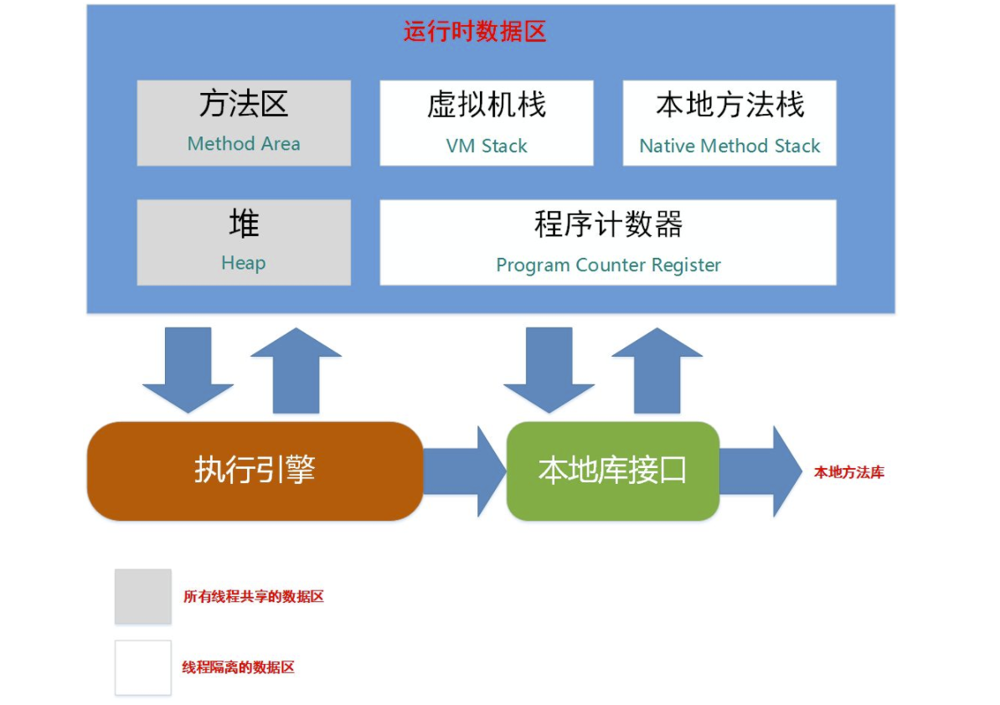

对于java程序员来说,虽然有虚拟机的自动内存管理机制,我们即使不清楚内存是如何分配的,也不妨碍我们写代码.但是如果你不明白虚拟机究竟做了啥,你既不能快速定位问题,也不能成为一个优秀的程序员.
概述
对于java程序员来说,在虚拟机的自动内存管理机制的帮助下,不再需要为每一个new操作去写配对的delete/free代码(C/C++语言是需要的),而且不容易出现内存泄漏和内存溢出问题,看起来由虚拟机管理内存一切都很美好.不过,也正是因为java程序员把内存控制的权利交给了Java虚拟机,一旦出现内存泄露和溢出方面的问题,如果不了解虚拟机是怎样使用内存的,那排查错误将会成为一项异常艰难的工作.
在这篇文章里,我们会写到这几个部分,了解了这几个部分,也就可以翻越虚拟机内存管理的第一步.
- java虚拟机内存的各个区域
- 各个区域的作用,服务对象,以及其中可能产生的问题
运行时数据区域
- Java虚拟机在执行Java程序的过程中,会把它管理的内存划分为若干个不同的数据区域.
- 这些区域都有各自的用途,以及创建和销毁的时间,有的区域随着虚拟机进程的启动而存在,有些区域则是依赖用户线程的启动和结束而建立和销毁. 根据Java虚拟机规范规定,Java虚拟机所管理的内存将会包括以下几个运行时数据区域

程序计数器
程序计数器(Program Counter Register)是一块较小的内存空间,它的作用可以看做是当前线程所执行的字节码的行号指示器.
字节码解释器工作时就是通过改变这个计数器的值来选取下一条需要执行的字节码指令,分支,循环,跳转,异常处理,线程恢复等基础功能都需要依赖这个计数器来完成.(想想我们平时写的java代码,是不是感觉一切都是有原因的)
对于多线程来说.由于每个线程都会执行自己的指令.那么为了线程切换后能恢复到正确的执行位置,因此每条线程都需要有一个独立的程序计数器,这样每条线程之间的计数器互不影响,独立存储.我们称这类内存区域称为 线程私有 的内存.
Java虚拟机栈
与程序计数器一样,Java虚拟机栈(Java Virtual Machine Stacks)也是线程私有的.它的生命周期与线程相同.
我们平时所说的栈内存,也就是这里的虚拟机栈.那么这个虚拟机栈究竟是什么呢?
虚拟机栈描述的是java方法执行的内存模型:
- 每个方法被执行的时候都会同时创建一个 栈帧(Stack Frame) 用于存储
局部变量表,操作栈,动态链接,方法出口等信息. - 每一个方法被调用直至执行完成的过程,就对应着一个 栈帧 在虚拟机栈中从入栈到出栈的过程.
提一下局部变量表:
- 局部变量表存放了编译期可知的各种基本数据类型(boolean,byte,char,short,int,float,long,double),对象引用(reference类型,它不等同于对象本身).
- 局部变量表所需的内存空间在编译期间完成分配,当进入一个方法时,这个方法需要在帧中分配多大的局部变量空间是完全确定的,在方法运行期间不会改变局部变量表的大小.
- 局部变量表区域可能会抛出两种异常状况
- 如果线程请求的栈深度大于虚拟机所允许的深度,将抛出StackOverflowError异常.
- 如果虚拟机可以动态扩展,当扩展时无法申请到足够的内存时会抛出OutOfMemoryError.
本地方法栈
- 本地方法栈(Native Method Stacks)与虚拟机所发挥的作用是非常相似的
- 本地方法栈与虚拟机栈的区别
- 虚拟机栈为虚拟机执行Java方法(也就是字节码)服务
- 本地方法栈则是为虚拟机使用到的Native方法服务
- 有些虚拟机(譬如Sun HotSpot)直接就把本地方法栈和虚拟机栈合二为一
关于什么是Native方法呢?
参考:http://blog.csdn.net/wike163/article/details/6635321
Java堆
堆内存的特点
- 对于大多数应用来说,Java堆(Java heap)是Java虚拟机所管理的内存中最大的一块.
- Java堆是被所有线程共享的一块内存区域,在虚拟机启动时创建 .
- Java堆内存区域的唯一目的就是存放对象实例,几乎所有的对象实例都是在这里分配内存.
- Java堆是垃圾收集器管理的主要区域.因为那么多实例在堆上分配内存,实例用完后,我们肯定要及时回收内存,这样才能给新的实例分配足够的内存呢.
- Java堆可以处于物理上不连续的内存空间中,只要逻辑上是连续的即可,就像我们的磁盘空间一样.
- 如果在堆中没有内存完成实例分配,并且堆也无法再扩展时,将会抛出OutOfMemoryErrory异常.
再细分一下堆内存
- 从垃圾回收的角度看
- 因为现在的垃圾收集器都是采用分代收集算法,所以Java堆中还可以细分为:
新生代,老年代,等等区域. - 后面写到垃圾回收的时候,再细说这部分.
- 因为现在的垃圾收集器都是采用分代收集算法,所以Java堆中还可以细分为:
- 从内存分配的角度看
- 线程共享的Java堆中可能划分出多个线程私有的分配缓存区
- 在实现上
- 既可以实现成固定大小的,也可以是扩展的.
- 不过目前主流的虚拟机都是按照可扩展来实现的
-Xmx来设置程序的堆内存大小-Xms来设置程序的栈内存大小
方法区
方法区(Method Area)
方法区的特点
- 方法区与Java堆一样,是各个线程共享的内存区域.
- 它用于存储已被虚拟机加载的类信息,常量,静态变量,即时编译器编译后的代码等数据.
- 然后Java虚拟机规范把方法区描述为堆的一个逻辑部分,但是它却有一个别名叫做Non-Heap(非堆),目的应该是与Java堆区分开来.
- 方法区被有些人称为"永久代(Permanent Generation)"是因为GC分代收集时候,方法区的变量会在永久代区域.
- 当方法区无法满足内存分区需求时,将抛出OutOfMemoryErrory异常.
运行时常量池
运行时常量池是方法区的一部分.Class文件中除了有类的版本,字段,方法,接口等描述信息外,还有一项信息是 常量池(Constant Pool Table).
用于存放编译期生成的各种字面量和符号引用,这部分内容将在类加载后存放到方法区的运行时常量池中.
Java语言并不要求常量一定只能在编译器产生,也就是并非预置入Class文件中常量池的内容才能进入方法区运行时常量池,运行期间也可能将新的常量放入池中.
直接内存
直接内存(Direct Memory)并不是虚拟机运行时数据区的一部分,也不是Java虚拟机规范中定义的内存区域,但是这部分内存也被频繁地使用,而且也可能导致OutOfMemoryErrory异常.那么究竟什么是直接内存呢?
在JDK1.4中新加入了NIO(New Input/Output)类,引入了一种基于通道(Channel)与缓冲区(Buffer)的I/O方式,它可以使用Native函数库直接分配堆外内存,然后通过一个存储在Java堆里面的DirectByteBuffer对象作为这块内存的引用进行操作.
这样能在一些场景中显著提高性能,因为避免了在Java堆和Native堆中来回复制数据.
对象访问(问题:在Java语言中,对象访问是如何进行的?)
对象访问在java语言中无处不在,是最普通的程序行为,但即使是最简单的访问,也会涉及Java栈,Java堆,方法区这三个最重要内存区域之间的关联关系.
上面简单介绍了Java虚拟机的运行时数据区.说得比较文字化,不够具体.那么我们具体来探讨一个问题.
在Java语言中,对象访问是如何进行的?
看这行最简单的代码,我们来解释这行代码.
Object obj=new Object();
假设这句代码出现在方法体中,那么
- Object obj 这部分的语义将会反映到 Java栈的本地变量表 中,作为一个reference类型数据出现.
- new Object() 这部分的语义将会反映到 Java堆 中,形成一块存储了Object类型所有实例数据值的结构化内存.
- 这块内存的长度是不固定
- 另外,在这个堆中还必须包含能查找到此对象类型数据(如对象类型,父类,实现的接口,方法等)的地址信息,这些类型数据则存储在方法区.